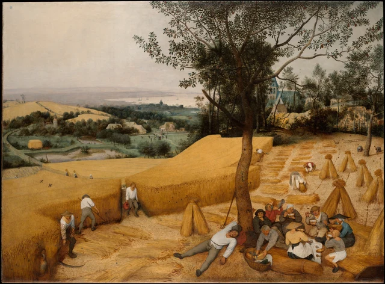

Bajo el árbol, un hombre ya se ha dejado caer al suelo. Las piernas se abren en direcciones distintas; la camisa blanca destaca sobre la tierra dorada. Un brazo se dobla por encima de la cabeza y el otro cae entre los rastrojos. A su lado siguen comiendo. Un poco más a la izquierda, dos guadañas pasan junto a los tallos. Casi podemos sentir varias velocidades a la vez: el golpe que corta, la cucharada que llega a la boca y el cuerpo que, por fin, ya no necesita moverse.
Recordemos a ese hombre tumbado antes de llevar la mirada hacia el fondo.

Este ensayo propone mirar la pintura desde esa convivencia de ritmos. Bruegel convierte la cosecha en un paisaje que podemos comprender como conjunto, sin que quienes lo habitan pierdan sus tiempos particulares. La estación exige recoger el grano; los cuerpos necesitan comer, beber y dormir. Al encontrarse en la misma imagen, esos tiempos hacen de la cosecha tanto un producto de la tierra como una parte de la vida de las personas.
La obra, realizada en 1565, pertenecía al ciclo de las estaciones que encargó Nicolaes Jonghelinck, un rico comerciante de Amberes. En los Países Bajos del siglo XVI, entonces bajo dominio de los Habsburgo, el comercio urbano, la producción rural y la vida religiosa estaban estrechamente vinculados. Hoy nos resulta habitual considerar el paisaje un tema independiente. En aquel momento, dar tanto espacio a los trabajos corrientes del campo suponía una elección importante. Ningún episodio de la vida de un santo establece aquí el centro de todo el territorio. La manera en que las personas atraviesan una estación merece por sí misma ser representada. Bruegel y su época
1 Los cuerpos bajo el árbol nos hacen detenernos
El original mide alrededor de un metro sesenta de ancho. Las figuras próximas tienen, por tanto, una presencia que podemos olvidar al pasar rápidamente por una reproducción en pantalla. Están agrupadas en la esquina inferior derecha, alrededor de un paño blanco. Una acerca el cuenco a la boca; otra levanta una jarra para beber; otra se inclina y corta un alimento dentro de la cesta. Un sombrero de ala ancha oculta un rostro, mientras otros se muestran desde ángulos distintos. Nadie preside la comida ni hay un gesto común que coordine a todos.

El hombre tiene la boca entreabierta, la camisa aflojada y las piernas extendidas sin miramientos. La pintura no le ha buscado una postura decorosa para dormir. Ese abandono importa: el cuerpo que había que sostener y dirigir al trabajar de pie entrega ahora su peso a la tierra. Detrás de él se levanta el tronco; a la derecha, las gavillas permanecen erguidas. Solo él se desparrama. Su postura da un lugar concreto al calor y al sopor que sentimos en el cuadro.
Quienes comen tampoco han salido del lugar de trabajo. Se sientan junto al trigo ya cortado; el paño con los alimentos está directamente sobre el suelo y las herramientas se apoyan en el árbol. El tronco sostiene visualmente la composición y, dentro de la vida representada, ofrece un lugar donde hacer una pausa. La copa ocupa una gran parte del cielo y deja una masa de hojas oscuras sobre la comida. Basta avanzar un poco hacia la izquierda para que el terreno vuelva a quedar expuesto al sol, sin refugio.
El alimento claro de los cuencos, el pan que alguien sostiene y la pieza redonda que se corta en la cesta acercan la siega y la comida. La visita del museo dedicada a la historia de la alimentación identifica pan, queso y unas gachas probablemente elaboradas con trigo. Conviene distinguir esta interpretación de lo que podemos examinar directamente: recipientes, cucharas, un cuchillo, trozos de pan y los movimientos de comer y beber. La receta concreta depende de ese conocimiento aportado desde fuera de la imagen. Audioguía del museo y transcripción
No estamos viendo el mismo trigo recién cortado y servido de inmediato. La elaboración y el almacenamiento de los alimentos requieren un tiempo que la pintura no muestra. Pero, en el primer plano, los cereales que se están recogiendo quedan junto a la comida que mantiene los cuerpos capaces de trabajar. La abundancia adquiere así otra escala además de la gran extensión amarilla: una boca, un cuenco y el momento en que alguien necesita parar.
2 El borde del trigal está cambiando
Miremos ahora la esquina inferior izquierda. El trigo todavía en pie forma una pared alta y compacta. Dos segadores trabajan a lo largo de ella; sus brazos y los mangos de las guadañas trazan líneas oblicuas. La hoja más cercana, baja y curva, se extiende contra el suelo claro. El otro trabajador nos da la espalda, con las piernas separadas: todo el cuerpo acompaña la fuerza dirigida hacia la herramienta.

Esta frontera permite ver de inmediato el resultado del trabajo. A un lado se apiñan líneas verticales de un dorado oscuro; al otro quedan al descubierto la tierra amarilla pálida y las hileras de tallos cortados. Las personas avanzan sobre el límite y, con ellas, el límite se interna en el campo. El trigal tiene, por eso, una forma provisional: el espacio que se abre ante nosotros ya ha sido segado, mientras que la pared de espigas a espaldas de los trabajadores todavía espera.
Observemos los tallos caídos. Se reúnen en bandas anchas siguiendo la dirección en que se cortaron y se dejaron sobre el suelo. Las curvas se repiten sin volverse mecánicamente iguales. Bruegel no pinta cada tallo de todo el campo por separado. Cerca de nosotros, unas pinceladas breves bastan para reconocer rastrojos y espigas; hacia el fondo, el trigo se funde en superficies de color más uniformes. Entre esas maneras de pintar se hacen claros los efectos de cada acción: dónde queda el cereal en pie, dónde ha sido tendido y dónde vuelve a reunirse en haces.
A la derecha, varias figuras inclinadas recogen el trigo, junto a una sucesión de gavillas erguidas. Una persona vestida de blanco se dobla tanto que la cabeza y las manos casi desaparecen entre las espigas. La pendiente de su espalda se parece al contorno de las gavillas próximas. Por un momento, cuerpo y cosecha adoptan formas semejantes. La persona pertenece a la tierra sin desvanecerse en ella: el peso de la ropa, la posición de las rodillas y la extensión de los brazos siguen mostrando la exigencia física de agacharse así.

Podemos enlazar los gestos para comprender una secuencia de labores, pero el cuadro no los dispone como pasos numerados. A la izquierda se corta, a la derecha se recoge, bajo el árbol se descansa y, algo más lejos, unas figuras atraviesan el campo cargadas de cereal. Todo sucede al mismo tiempo. Es posible imaginar una jornada a través de estas acciones sin tomar a cada figura por la reaparición de un mismo trabajador en una hora distinta.
Precisamente esa simultaneidad vuelve tan visible al que duerme. Otros aún se mueven; él ya se ha detenido. También hay interpretaciones que relacionan al durmiente con la pereza y a quienes trabajan con la diligencia. Catálogo de investigación del museo Este ensayo prefiere atender al descanso como medida corporal de toda la escena: la mirada puede abarcar de una vez una tierra abundante, pero las personas tienen que comer bocado a bocado y trabajar por tramos.
3 La mirada se aleja y los cuerpos siguen cerca
Ahora podemos pasar con los ojos por encima del trigal. Tras las laderas doradas, una franja verde reúne caminos, arboledas, casas y estanques. A la izquierda, un carro cargado de cosecha sigue una curva del camino; algo a la derecha del centro, un pequeño grupo ocupa un claro. Más allá, las torres, las velas de los barcos y la gran extensión de agua se funden en una bruma gris azulada. El horizonte llega casi a confundirse con el cielo.

Hay varias formas de llevarnos hacia la distancia. Las figuras se hacen pequeñas y los elementos se ocultan unos a otros; el color cálido y denso del trigo cede ante verdes y azules más fríos y claros. Los tallos, los pliegues y las hojas que distinguíamos en primer plano dejan de reconocerse individualmente. Esa pérdida de nitidez con la distancia suele llamarse perspectiva atmosférica. Nos permite recorrer con los ojos un espesor de aire, en lugar de limitarnos a contar un primer plano, un plano intermedio y un fondo.
Sin embargo, el espacio no queda enteramente abierto. El tronco grueso, desplazado hacia la derecha, intercepta parte de la vista lejana; la copa se extiende por arriba. La ladera próxima oculta además la conexión con las tierras de abajo. Vemos muy lejos, pero no podemos reconstruir cada paso del recorrido. Los ojos saltan hasta las velas; un cuerpo que quisiera llegar allí tendría que bajar, rodear árboles y cruzar campos. El paisaje ofrece una vista amplia desde lo alto y conserva, al mismo tiempo, obstáculos para el movimiento.
Volvamos entonces al hombre bajo el árbol. Nuestra mirada ha cruzado las casas y alcanzado el agua, pero su cuerpo continúa muy cerca. Las personas del fondo pueden reducirse a unas pinceladas; sus piernas extendidas conservan una longitud difícil de ignorar. El árbol pone en relación ambas escalas: enmarca un lado del panorama y mantiene, a sus pies, la vida próxima de quienes comen y duermen.
Las actividades lejanas también impiden que el tiempo siga un único compás. Hay pequeñas figuras junto al estanque, otras se reúnen o juegan delante de las casas y los caminos sirven para transportar la cosecha. Los especialistas del museo identifican el juego como una práctica en la que se lanzaban objetos contra un gallo. Al reconocer el blanco de los lanzamientos, el ocio lejano adquiere un lado más áspero. Explicación de los especialistas del museo Esos detalles no obedecen todos al movimiento de las guadañas. El trigo maduro señala una estación compartida por todo el lugar, sin que cada persona haga lo mismo en el mismo instante. Al regresar al conjunto, el título Los cosechadores ya puede abarcar todo un territorio habitado.
4 Una parte del año en casa de un comerciante
Si contemplamos el cuadro por separado, es fácil imaginarlo como un paisaje de verano concebido de manera independiente. Pertenecía, sin embargo, a una serie de seis pinturas de las estaciones, de las que hoy se conservan cinco. Las cuentas del regalo de 1594 y el inventario de la herencia de 1595 registran seis cuadros que representaban los doce meses del año. Documentación histórica de la colección Los cazadores en la nieve, El día sombrío, La siega del heno, El regreso del rebaño y Los cosechadores muestran distintas etapas del año. Cambian a la vez las hojas, la nieve, el cielo y las ocupaciones. La estación se reconoce a través de la vida de las personas. Presentación del ciclo del Kunsthistorisches Museum de Viena
La explicación actual del Metropolitan Museum sitúa Los cosechadores en julio o agosto; el Kunsthistorisches Museum, al distribuir el ciclo en seis estaciones, lo relaciona con agosto y septiembre. Ambas referencias lo colocan en el tiempo de recoger el cereal maduro. Para mirar el cuadro, conviene atender a su posición dentro de la serie: el trigo ya ha crecido y está dorado, el trabajo se dirige a la cosecha y tanto el aire como los cuerpos dejan sentir la pesadez del final del verano. Ficha del Met; El ciclo y las seis estaciones
La representación de los meses mediante labores agrícolas es anterior a Bruegel. Los calendarios medievales y renacentistas recurrían a menudo a la siembra, la siega o la vendimia para hacer visible el año. Bruegel amplía esa manera de reconocer el tiempo hasta convertirla en una serie de grandes paisajes. Ninguna figura necesita levantar un atributo que anuncie «esto es el verano». El avance de la siega, la cantidad de ropa y los lugares elegidos para descansar ya hacen que la estación se extienda por toda la pintura. Bruegel y la tradición de los calendarios
Jonghelinck era un comerciante y coleccionista urbano. Las pinturas se realizaron para su residencia de campo y posiblemente decoraron su comedor. Podemos imaginar lo que suponía contemplar la comida de los trabajadores desde un interior acomodado. El propietario podía observar cómo se producían los alimentos a lo largo del año, mientras las personas del cuadro comían durante una pausa de sus labores. La amplitud de la vista también corresponde a una posición que puede disfrutar alguien con tiempo libre. El ciclo en la residencia de Jonghelinck
Este contexto cambia la manera de entender tanta abundancia. El trigo es alto, los campos son extensos, hay comida y los cuerpos parecen robustos. El mal tiempo, las cosechas fallidas, las condiciones de arrendamiento y el reparto de los ingresos no se desarrollan aquí. La interpretación actual del Met destaca tanto la simpatía hacia los campesinos como una imagen idealizada de armonía natural, adecuada a los deseos de un rico cliente urbano. Por convincentes que sean los detalles, la escena sigue siendo una selección. Interpretación del museo
Reconocer esa selección no agota lo que podemos ver. Para el comerciante, el cuadro podía ofrecer una imagen grata de tierras fértiles. Para quienes lo miramos, las bocas abiertas, las piernas pesadas y las espaldas dobladas hasta las espigas impiden atender solo a lo producido. Esa es la tensión que interesa a este ensayo: el campo se organiza como un conjunto satisfactorio de contemplar, mientras los cuerpos cercanos nos obligan a detenernos y reconocer su peso y sus tiempos.
5 El amarillo del mediodía
Queda una pregunta sencilla: ¿por qué este cuadro parece tan caluroso?
El amarillo dorado ocupa una parte muy grande de la superficie, pero no forma una mancha uniforme. El trigo sin segar tiene una base parda y oscura y numerosas líneas verticales. El suelo ya cortado se ve claro y seco; las gavillas presentan bordes luminosos e interiores oscuros; los tallos en sombra se acercan al color de la tierra. Tonos parecidos cambian de textura. La mirada permanece dentro de una misma gama cálida sin perder las diferencias que el trabajo ha introducido en el terreno.
El verde profundo del follaje rodea parte de ese amarillo y el gris azulado del fondo lo realza desde otro lado. El cielo es blanquecino, gris, sin la transparencia fresca de un azul despejado. El aire parece ablandar los contornos lejanos, mientras el campo dorado del primer plano casi llega hasta el borde del marco. El calor se manifiesta a la vez en las posturas, en el peso de los colores y en los cambios de visibilidad.
Los blancos de la ropa tienen un papel especial. La camisa del segador de la izquierda, la espalda de la persona inclinada a la derecha y el torso extendido del durmiente hacen destacar varias acciones entre los amarillos y pardos. El blanco reaparece en el campo y, al seguirlo, podemos volver a leer la cosecha, que parecía inmensa y quieta, como una sucesión de esfuerzos y descansos concretos. La jarra roja y la prenda roja de quien bebe introducen acentos cálidos menos numerosos y más concentrados.
Hay muchos movimientos, aunque el conjunto no resulte agitado. Las grandes superficies de trigo dejan intervalos entre ellos; el árbol reúne a las figuras de la derecha y la distancia atenúa los pequeños acontecimientos del fondo. Podemos observar cada gesto o alejarnos un poco para que vuelvan a componer un mediodía de verano. Al alternar ambas miradas, la escala del paisaje y la de las personas se corrigen mutuamente.
Miremos por última vez al hombre con el que comenzamos. Sigue sin levantarse. Tampoco terminará nunca la siega de la izquierda. Pero ya hemos visto los tallos cortados, los haces reunidos, los cuencos que llegan a la boca y el carro que transporta la cosecha. Sabemos que ese instante inmóvil contiene muchas cosas que han ocurrido y otras que van a continuar. Ahí reside, en la lectura que proponemos, la fuerza de Los cosechadores: una etapa del año se convierte en un conjunto visible y, dentro de ella, cada persona conserva el tiempo de su propia vida. La pausa bajo el árbol le da un cuerpo a la abundancia.
Lectura opcional Volver a mirar con SAE
La lectura anterior se sostiene por sí sola. La estética contemporánea SAE, Self-as-an-End, permite continuar con una pregunta: ¿en qué nos apoyamos cuando hablamos de calor, cansancio y ritmo en esta pintura? SAE distingue la emoción personal de los fundamentos que podemos examinar en común. Sus «rayos» son distintas direcciones de indagación, sin establecer una clasificación de las obras. Aquí se emplean como una herramienta actual para mirar, no como una explicación de las intenciones del pintor. Panorama de la estética SAE
Podemos comenzar por la percepción. Si miramos solo la figura 2, el durmiente y quienes comen llenan casi toda la vista y el peso de los cuerpos destaca. Al volver a la figura 1, quedan envueltos por el trigal, la copa y el paisaje lejano. Las mismas posturas se presentan de otra manera según sus relaciones visibles. Dejemos por un momento de usar el color del trigo para juzgar su madurez y observemos su luminosidad y cómo lo rodean el verde y el gris azulado. Lo que podemos comprobar es cómo actúan conjuntamente la extensión amarilla, el verde oscuro que la rodea, la claridad de las camisas y las diferencias entre las escalas cercana y lejana. Decir «me gusta el campo» no explica esas relaciones. En el rayo perceptivo de SAE, placer y belleza no se deducen automáticamente el uno de la otra; que una imagen resulte agradable tampoco sustituye el examen de cómo se nos presenta. La belleza de la percepción
La dirección cognitiva pide volver al cuadro con la experiencia que traemos de fuera. Quien conozca las labores de la cosecha puede anticipar qué viene después al observar los rastrojos, los tallos tendidos y las gavillas. Quien imagine la temporada de trabajo intenso como una actividad continua de todos puede corregir esa expectativa al encontrar al durmiente. Ahí la memoria y la predicción se vuelven concretas: una experiencia anterior crea una expectativa y los detalles visibles pueden modificarla. Reconocer simplemente que las figuras son campesinos no basta para completar este análisis. La belleza de la cognición
Los rastrojos permiten plantear otra pregunta con límites claros. En un campo real, los tallos segados son huellas del corte; en la pintura, esas huellas están representadas mediante pigmentos. Podemos pensar a partir de ellas cómo lo ocurrido permanece en una forma posterior, manteniendo la diferencia entre la representación y la cosa. Distinguir las marcas de pintura de las huellas representadas da a la pregunta por la causalidad un punto concreto en el que apoyarse. La belleza de la causalidad
Estas direcciones deben devolvernos finalmente al conjunto. Si hablamos solo de armonía, queda por explicar por qué coinciden la guadaña y el sueño. Si vemos únicamente una denuncia del esfuerzo, tendremos que dar cuenta de unos campos tan abundantes y una vista tan serena. Las interpretaciones pueden contrastarse a partir de esas relaciones precisas. La teoría sirve cuando consigue que la siguiente mirada sea más atenta que la anterior.
Sobre las imágenes y las fuentes
Las descripciones visuales se basan en la imagen de 3811 × 2809 píxeles facilitada por el Metropolitan Museum of Art. La vista completa conserva intacto el archivo descargado; las figuras 2 a 5 son únicamente recortes rectangulares, sin ajustes de color, restauraciones, añadidos pictóricos ni contenido generado. El JPEG original no incorpora un perfil de color ICC; en este paquete no se ha añadido ninguno ni se ha realizado una conversión de color. Los recortes conservan los píxeles decodificados. El tamaño de la reproducción, los materiales y las condiciones de observación en pantalla siguen siendo distintos de los de la obra original.
La obra y esta imagen pertenecen al dominio público; su uso sigue la política de acceso abierto del Met. La licencia de la imagen no equivale a una autorización para reproducir los textos de investigación. Este ensayo se basa ante todo en una lectura visual independiente; los datos históricos se apoyan en las fuentes de los museos enlazadas. La interpretación propuesta no pretende documentar las intenciones del pintor ni implica el respaldo del museo. Véanse también las referencias y el registro de imágenes.